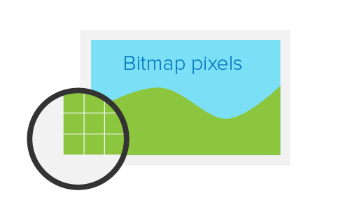
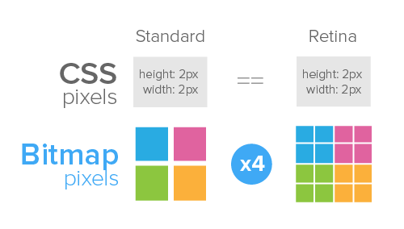
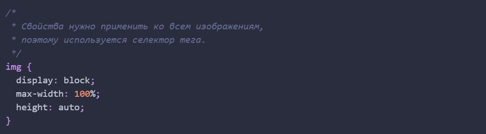

Ретина (retina) - маркетинговый термин компании Apple, описывающий устройства с экранами повышенной пиксельной плотности. В тот же физический размер экрана вмещается больше пикселей, за счёт того что их размер меньше. Это повышает качество и чёткость изображения на экране.
Физические пиксели (device pixel или hardware pixel) — самые маленькие элементы любого экрана (его матрицы), каждый из которых имеет свой цвет и яркость.
Разрешение экрана (screen resolution) - количество физических пикселей на экране устройства. Приводится нерешённым, что дополнительно говорит о соотношении. Например, разрешение 1920x1080 означает что экран 1920 физических пикселей по ширине и 1080 по высоте. Если умножить получится общее количество пикселей на таком экране - 2073600.
Плотность экрана (screen density или pixel density) - это количество физических пикселей, которое помещается в один дюйм. Измеряется в ppi (pixels per inch). Чем выше плотность, тем меньше размер пикселя и тем больше их на экране.
CSS-пиксели (CSS pixels, device-independent pixels) — абстрактная величина, используемая браузерами для точного отображения контента на страницах, вне зависимости от экрана. На дисплеях стандартной плотности один CSS-пиксель соответствует одному физическому пикселю устройства.
Например, есть блок размером 2x2 CSS-пикселя. Все размеры элементов, которые указываются в CSS или HTML, это CSS-пиксели
На обычных экранах он будет занимать область 2x2 физических пикселей, а на Retina-экранах, например с плотностью 2, этот же блок получит 4x4 физических пикселей. То есть в два раза больше по горизонтали и в два раза больше по вертикали. Таким образом, на Retina-экранах с плотностью пикселей в два раза выше стандартной, количество пикселей в 4 раза больше, чем на обычных.
CSS-пиксель это абстрактная величина не зависящая от экрана устройства. При масштабировании и на экранах высокой пиксельной плотность, в одном CSS-пикселе может помешаться больше одного физического пикселя.
Растровые пиксели (bitmap pixels) - самые маленькие части, составляющие растровое изображение (png, jpg, gif и т.д.) Каждый пиксель содержит информацию о цвете и расположении в системе координат изображения.
Кроме растрового разрешения, изображениям задаются размеры в CSS-пикселях. Браузер сжимает или растягивает изображение в соответствии с его CSS-шириной и длиной. При отображении на обычном экране один растровый пиксель соответствует одному CSS-пикселю. На Retina-экранах с плотностью 2, каждый растровый пиксель умножается в 4 раза, что приводит к потере качества изображения не подготовленного к ретине.
Векторная графика отображается одинаково хорошо на экранах с любой плотностью пикселей.
Для ретины необходимы специально подготовленные ресурсы. Текст и SVG-графика отображаются везде одинаково, так как их рендерит сам браузер по набору точек и соединяющих их кривых. Ретинизация это приём для подготовки растровой графики.
Самый простой способ подготовить растровую графику к ретине - это экспортировать из макета большое изображение. Например, чтобы показать фотографию 200x300 пикселей на ретине с плотностью 2, необходимо подготовить её вариант в размере 400x600 пикселей.
Процесс подготовки состоит из экспорта изображений x1, x2 и x3 размера от оригинала под каждую плотность и сохранения их с соответствующими префиксами @2x и @3x, для оригинала префикс не нужен.

После чего достаточно задать нужный размер тегу используя HTML или CSS.
В примере используется онлайн-сервис изображений. Загружается три картинки 320x240 (x1), 640x480 (x2) и 960x720 (x3) пикселей. Размер всех элементов одинаковый - 320x240 CSS-пикселей. Если перейти в пример с телефона или просто увеличить масштаб страницы с примером, будет заметно что первое изображения сильно размывается, второе остаётся вполне качественным, а третье всегда кристально чёткое.
Это не значит что всегда нужно экспортировать и загружать максимально большое изображение. На этом шаге мы рассмотрели проблему и научились делать ретинизацию растровой графики. Далее в этом занятии мы научимся загружать различные изображения под каждую ширину или плотность экрана.
Представьте изображение 1200x600 пикселей. Оно отлично выглядит на широком экране. А что будет, когда мы откроем страницу, скажем на телефоне или планшете? Ничего хорошего, по умолчанию изображение будет оставаться шириной 1200px и появится полоса горизонтальной прокрутки. На ретине такое изображение потеряет качество. А что насчёт веса изображения, действительно нужна ли нам картинка 1200x600 для телефона с экраном 320px? Нет, не нужна.
Отзывчивые изображения - это термин для описания набора приёмов используемых в HTML и CSS, при помощи которых контентные и фоновые изображения выглядят одинаково хорошо на устройствах с различными размерами и плотностью экрана.
Самый простой способ реализовать отзывчивость, это использовать одно изображение для всех устройств, задав ему определённый набор CSS-свойств.

Так будет работать техника простого отзывчивого изображения - одна картинка для всех устройств, которая подстраивается под текущую ширину экрана.
Этот базоый подход для контентных изображений слишком простой и не решает проблему ретина-экранов и веса большого изображения на мобильных устройствах, но это хороший старт.
Если необходимо добавить ретинизированное фоновое изображение, нужно указать путь к изображению и обязательно задать размер фона элемента равным размеру самого элемента.
В случае когда размер элемента динамический и узнать его в CSS невозможно, размеру фона можно задать значения contain или cover, по ситуации, чтобы фон помещался в элементе.
При таком подходе мы получим 2x изображение на любом экране. Поэтому существуют медиа-функции позволяющие определить плотность пикселей экрана в CSS. Внутри набора таких медиа-функций, переопределяем значение свостйва background-image.
В медиа-функции min-device-pixel-ratio указывается просто значение пиксельной плотности экрана как число - коэфициент между физическими и CSS-пикселями. Так же необходимо указать функцию min-resolution с двумя разными значениями.
Медиа-функция min-device-pixel-ratio поддерживается некоторыми браузерами только с вендорным префиксом, поэтому если обработать этот код автопрефиксером получим финальный вариант.
Такая солянка из медиа-функций и их значений нужна потому что они еще не стандартизированы между всеми браузерами.
В примере задано одинаковое фоновое изображение в различных размерах для экранов с плотностью пикселей 1x, 2x и 3x.
Отзывчивый тег img используется браузером для загрузки только подходящего под текущее устройство изображения из предложенных разработчиком. Такой подход повышает скорость загрузки и отображаения страницы, так как вес изображения оказывает большое влияние на эти параметры.

Разработчик указывает список доступных к загрузке изображений, а браузер, основываясь на размере экрана устройства и его пиксельной плотности, выбирает самое подходящее.
Например, разработчик указал два доступных изображения - 300×300 и 600×600 пикселей. Если браузеру достаточно картинки 300×300, это четырёхкратная экономия веса загружаемого изображения. Чем меньше размер экрана устройства, тем больше выгода от такого подхода. Экономия трафика на мобильном устройстве может достигать 70-90% по сравнению с десктопом.
Определяет список версий одного и того же изображения разных размеров. Не стоит пытаться загрузить разные изображения (по контенту или формату) при помощи этой техники, браузер обращает внимание только на размер и считает что всё что передают в srcset это версии одного и того же изображения.
Самый простой способ использования отзывчивого тега это применение дескриптора x в атрибуте srcset, который буквально указывает браузеру для какой плотности экрана подходит та или иная версия изображения.

В атрибуте src указывается версия изображения в самом плохом качестве (x1), потому что оно самое маленькое. В атрибуте srcset добавили x2 версию изображения для ретины с плотностью 2. Если страница будет открыта в браузере на устройстве с плотностью пикселей 2 или выше, вместо дефолтной будет использована эта версия photo@2x.jpg.
В srcset можно перечислить сколько угодно вариантов изображения и их дескрипторов, разделив объявления запятой.
В примере указаны изображения для 2x и 3x плотностей, в два и три раза больше оригинала, а так же оригинальное изображение по умолчанию для 1x.
При входе с Macbook Pro 15" 2017, плотность пикселей экрана которого составляет 2, браузер загрузит изображение у которого указан дескриптор 2x.

Недостаток этого подхода кроется в ограниченности критериев по которым браузер выбирает изображение - только плотность пикселей экрана. Отзывчивые изображения используются в отзывчивой вёрстке, размеры блоков в котрой изменяются в зависимости от размера вьпорта.
Задать жёсткие размеры изображения на экране не всегда возможно, потому что при увеличении вьюпорта необходимо будет показывать изображение 300x200 в блоке размерами 600x400 пикселей или больше
Идеально если бы браузер мог выбрать изображения не только по плотности пикселей, но еще учитывал текущий размер вьюпорта и размер самой картинки на экране. Для этого ему необходимо знать размер оригинального изображения в предлагаемом списке. Как раз эту задачу и решает дескритор w и атрибут sizes.
Мы по-прежнему предоставляем одно и то же изображение в разных размерах, но при этом даём браузеру больше информации, чтобы он мог сам выбрать необходимое изображение, исходя из плотности пикселей, размера вьюпорта, скорости сетевого подключения и оригинального размера изображения.
Помечая каждое изображение дескриптором w, в котором указана ширина этого изображения в пикселях, мы перекладываем все вычисления и выбор изображения на браузер.
Если изображение photo-600.jpg размером 600x400 пикселей, то помечем его дескриптором 600w. В имени изображения так же указываем его физическую ширину, чтобы не забыть, так как версий изображения будет довольно много.
При использовании дескриптора w, то есть при привязке к физическим рамзерам изображения, необходимо использовать атрибут sizes, чтобы подсказать браузеру приблизительный размер холста на котором в браузере будет отрисовываться изображение. Это упростит браузеру задачу выбора правильного изображения. Размеры можно указывать как в пикселях, так и в относительных единицах.
Например, если изображение на экране всегда будет 300px, достаточно указать одно значение.
В случае когда изображение должно быть на 100% ширины вьюпорта на мобильных устройствах до 600px, 300px на экранах 601-900px и 600px на экранах шире, значение sizes будет включать в себя медиа-запросы.
Бразуер выбирает картинку по довольно простому алгоритму - умножает ширину вьюпорта на плотность пикселей, учитывает размер картинки на экране и выбирает ближайшее подходящее по размеру изображение.
На илюстрации показан десктоп и смартфон с шириной изображения 100% ширины вьюпорта.
В случае когда в sizes задано фиксированное значение ширины изображения, браузер умножит его на плотность экрана. Например, sizes установлен в 300px.
Стоп, то есть для мобильного устройства будет взято большее изображение?! - ИМЕННО ТАК! В этом вся суть, браузер выбирает то изображение, которое лучше всего подходит в данной ситуации.
Потому что в отличии от разработчика, который знает только размер изображения и приблизительный размер холста на котором оно будет отображаться, браузер знает все важные технические характеристики устройства на котором была открыта веб-страница. Кроме того браузер может учитывать другие факторы, такие как скорость интернет-соединения и состояние заряда батареи.
Как мы уже разобрались, тег с атрибутами srcset и sizes позволяет загружать разные версии (размеры) одного и того же изображения, например для поддержки ретины. Тег
В каждой ситуации необходимо использовать правильный инструмент, возможно вам будет достаточно отзывчивого тега img, не обязательно везде применять picture.
Элемент
Позволяет обозначить MIME-тип данных, указанных в атрибуте srcset. Если браузер не подерживает данный тип, то этот элемент source пропускается.
Позволяет определить медиа-запрос, который браузер будет анализировать для выбора элемента source. Если медиа-запрос определяется как ложный (не подходит), то этот элемент source пропускается.
Элемент picture можно применять для загрузки изображений в современных форматах (например webp). Для браузеров которые не поддерживают такие форматы, указывается дефолное изображение в альтернативном формате (например jpg или png).
Следующий пример определяет элемент picture, который по умолчанию позволит браузерам загрузить photo.webp, при этом предоставляется альтернатива photo.jpg для браузеров которые еще не поддерживают этот формат.
Все варианты доступных изображений перечисляются в тегах source, которые будут последовально обрабатываться браузером.
Самый простой способ сконвертировать изображения в формат webp - использовать онлайн-инструменты, например squoosh.app .
Аналогично функционалу в теге img, позволяет указать набор вариантов изображений с дескрипторами x или w.

Техника кадрирования используется для загрузки различных изображений для каждого экрана. Это позволяет показать пользователю максимум полезной информации и деталей изображения даже на маленьких устройствах. Например, загружать альбомную (landscape) или книжную (portrait) версию изображения в зависимости от ориентации или разрешения устройства.
Перейдите в пример и изменяйте ширину окна браузера.